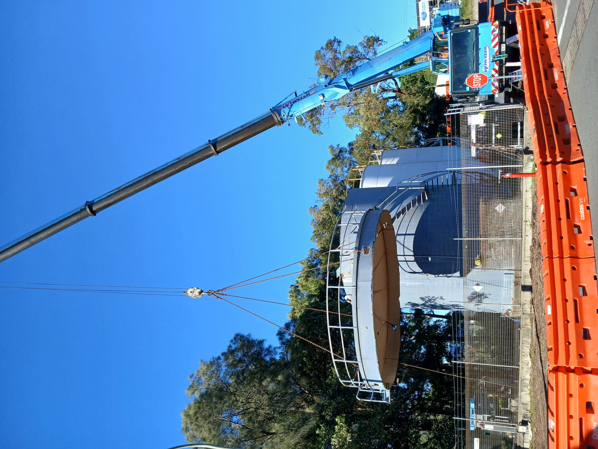
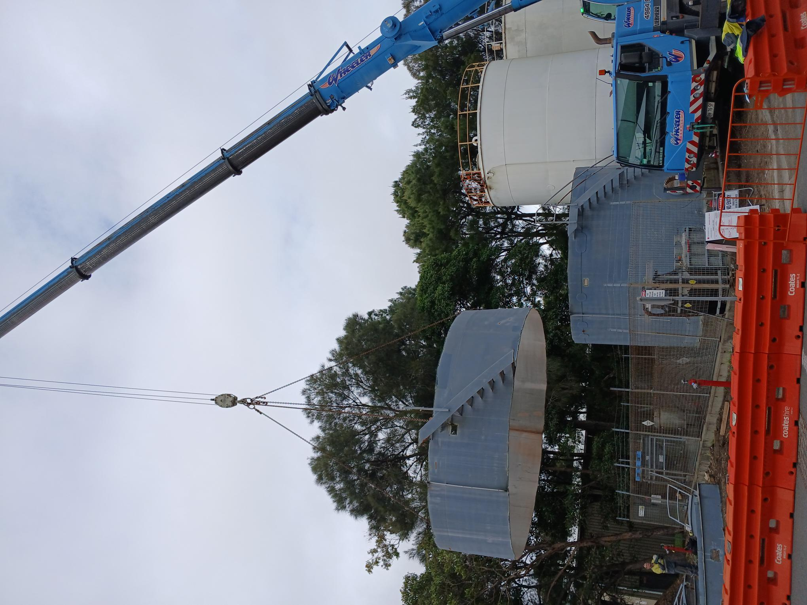
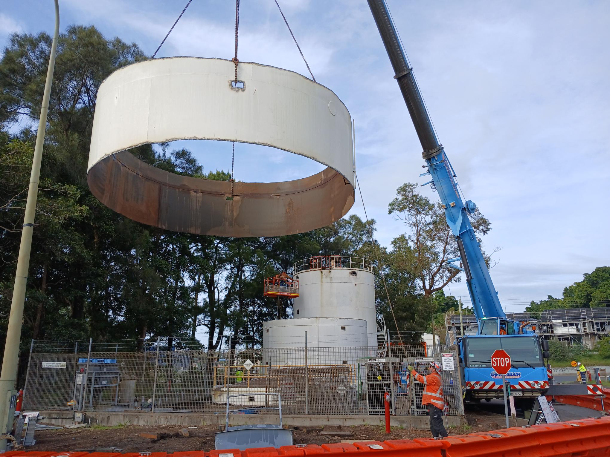
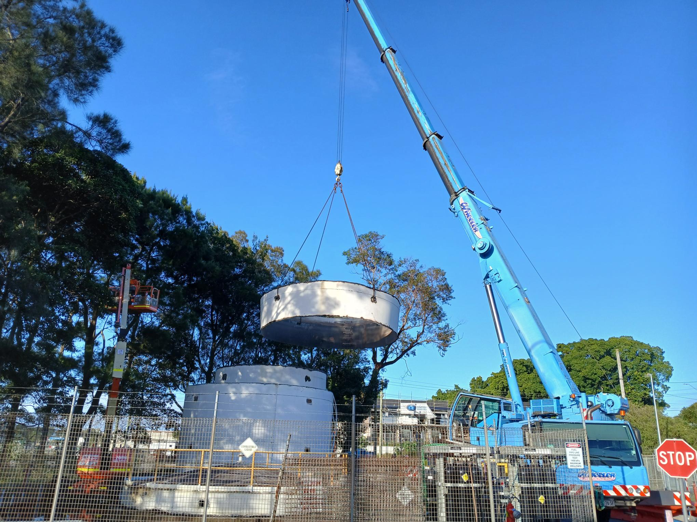

Project Overview
The Pacific National Silo Deconstruction project involved the controlled removal of redundant industrial silo infrastructure and associated structural steelwork within an operational rail environment.
Works were completed using staged demolition methods, crane-supported removal, structural separation, hot works, rigging controls and detailed lift planning. The project required careful sequencing to safely lower silo sections to ground level for processing, loading and removal from site.
Key Features
- Industrial silo deconstruction
- Staged top-down removal sequencing
- Crane-supported structural removal
- Hot works and controlled steel separation
- Lift planning and rigging coordination
- Working at heights and access planning
- Processing and load-out of removed steelwork
- Operational rail site environment
Project Gallery




Removal Methodology
Site establishment and planning
Site access, inductions, SWMS reviews, lift planning, exclusion zones and work permits were completed prior to demolition works commencing.
Structural preparation
Silo sections and supporting steelwork were inspected, marked, rigged and prepared for controlled separation using approved access and hot work methods.
Controlled crane removal
Silo sections were removed progressively using crane-supported lifts, controlled cutting, verified lift points and barricaded drop zones to maintain safe separation from personnel and plant.
Processing and demobilisation
Removed sections were lowered to ground level, processed into transportable sizes, loaded out and removed from site before final clean-up and demobilisation.

Have a Project in Mind?
Get in touch to discuss project requirements and how STRUKTURA Group can support demolition planning, lift sequencing and site coordination.
CONTACT US